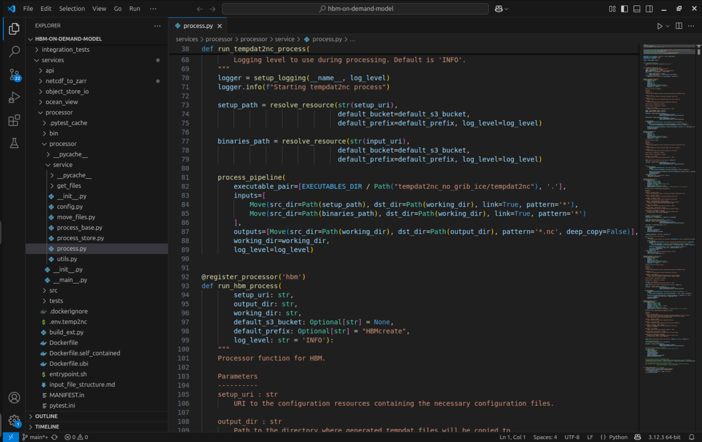
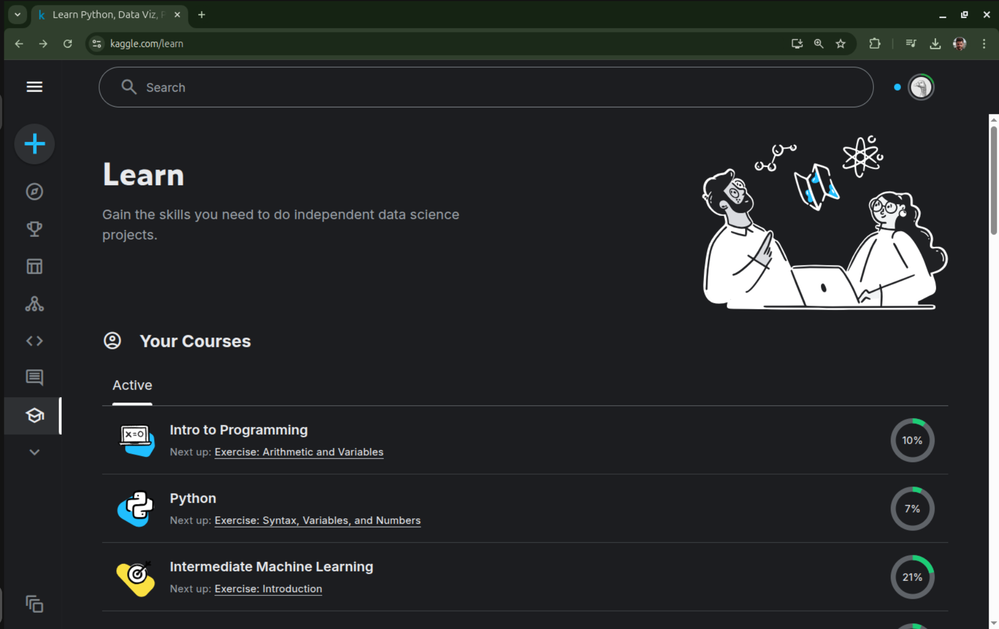

Pathways to Learn Python for Scientific Software Development
A Guide for Researchers at DMI
Presenter: [Your Name/Department]
Date: April 7, 2025
Note: This talk outlines practical learning paths, resources, tools, and best practices for researchers at DMI looking to start or improve their skills in scientific software development using Python.
Python is a dynamic language
Meaning you can open it in the terminal and use it interactively.

... as opposed to a compiled language like Fortran.
Development Environments
You can develop using your favourite text editor, VIM, etc., but there are benefits in using an IDE:
- Code Completion: Suggests function names, parameters, and imports as you type
- Integrated Debugging: Set breakpoints, inspect variables, and step through code execution
- Version Control Integration: Git support built directly into your development environment
- Virtual Environment Management: Create and manage Python environments with ease
- Scientific Tooling: Built-in support for Jupyter notebooks, data visualization, and scientific libraries
- Code Inspection: Automated detection of style issues, errors, and potential bugs
Visual Studio Code
Very popular, but requires some setup:
Spyder

Matlab like interface, but more limited.
PyCharm

Sophisticated, Python orientated IDE. Requires a subscription.
Jupyter Lab

For interactive code development. Not suitable for large code bases.
Learn the basic syntax: tutorial
The official Python tutorial
Python Guide for Beginners
Python Cheatsheet
Learn the basic syntax: Kaggle
Kaggle offers course on Python...
Learn the basic syntax: tutorial

Kaggle offers course on Python...

Key Python Libraries for Scientific Software
Domain-Specific Libraries
- Cartopy - Geospatial data processing
- scikit-learn - Machine learning
- PyTorch - Deep learning
Scientific Computing
- Dask - Parallel computing
- xarray / zarr -
- Numba - JIT compiler for accelerating code
- JAX - High-performance numerical computing